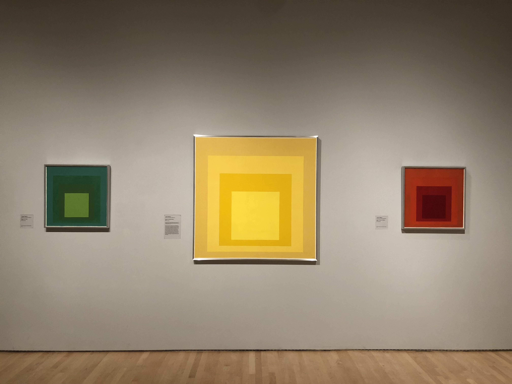
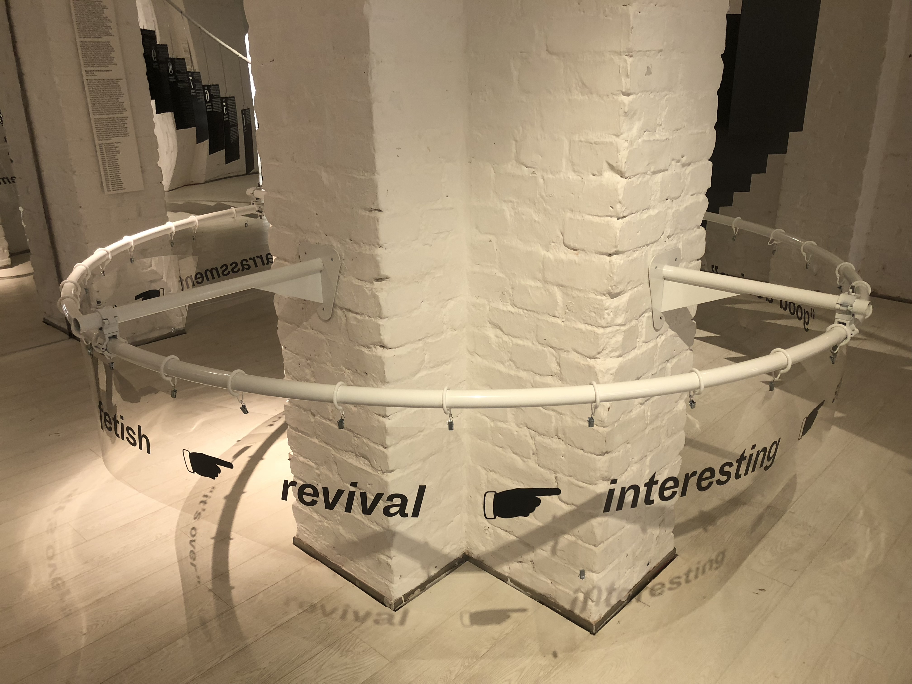
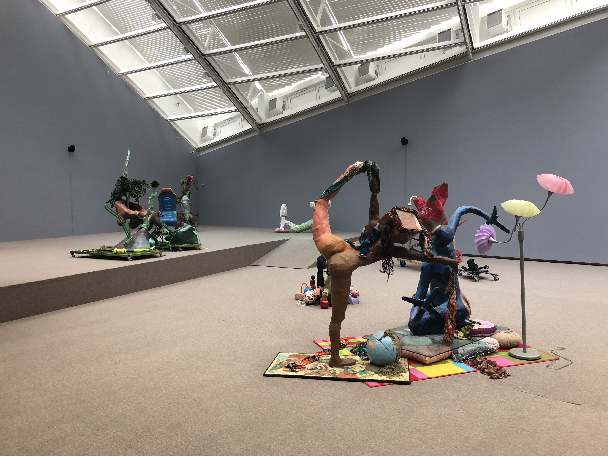
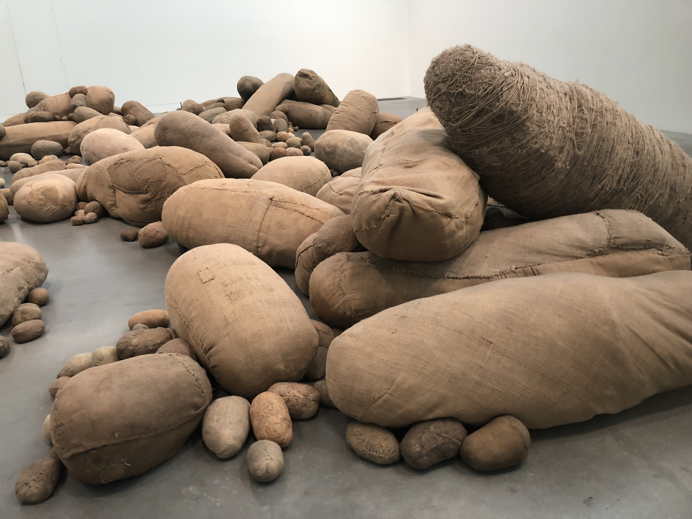
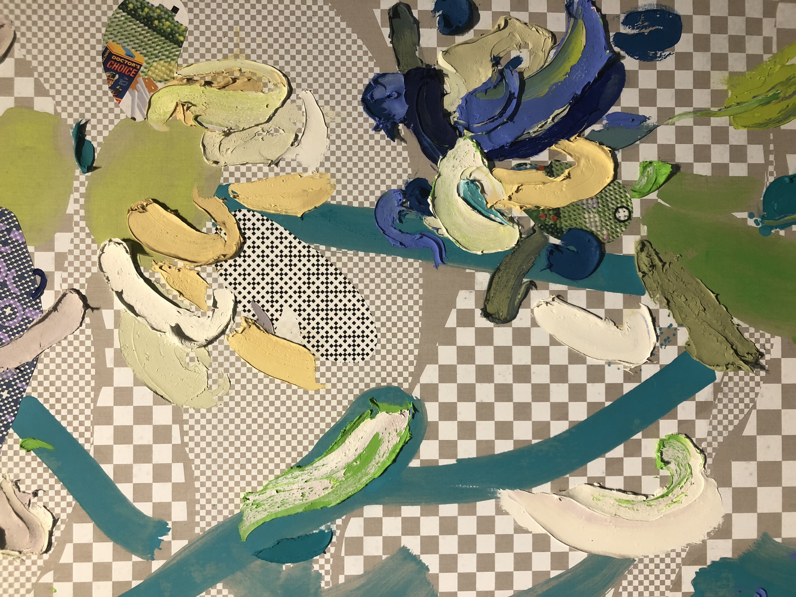
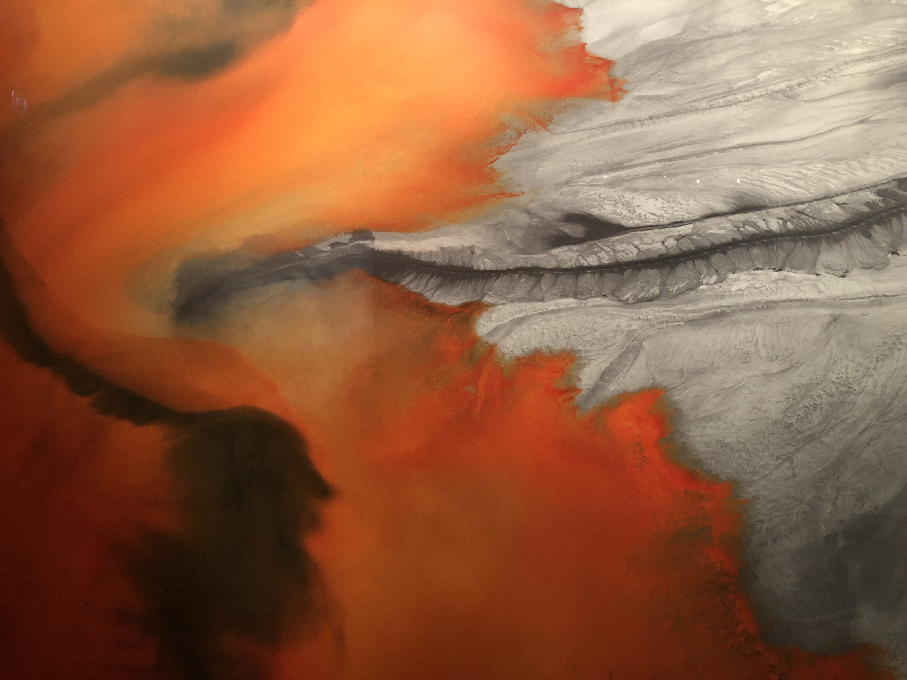

Fine Art
I’m immediately attracted to conceptually-driven art of unconventional media. In understanding technical skills, I enjoy analyzing masters’ studies or process work. Art should be provocative while also maintaining a high level of intent and craftsmanship.

Series of color studies done by the color theory master himself—Josef Albers. This particular set is interesting since it tests analogous hues alongside each other.

Witty poster developed by Danish art group Superflex. This work is successful in raising critique since its intended use is to leave the gallery and reach the general public.



Woven sculpture at the Museum of Contemporary Art Chicago. Weaving alongside the staircase, the sculpture acts as the unifying element across all three floors.

Art installation by Magdalena Abakanowicz. One’s perception of scale and space is altered when being surrounded by a room full of plush potato forms.

Snippet of an analog painting incorporating digital imagery. Numerous questions arise as to the work’s classification: analog or digital, painting or graphic, textured or flat, etc.



Dynamic light sculpture by Spencer Finch that heavily contrasts with the traditions columns around it. It is literally and figuratively in the center of attention.